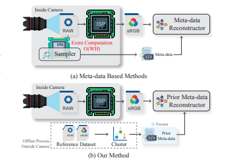
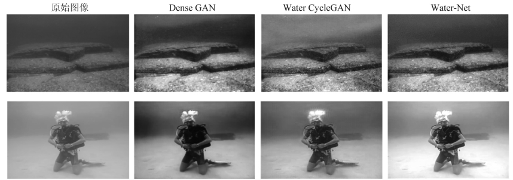
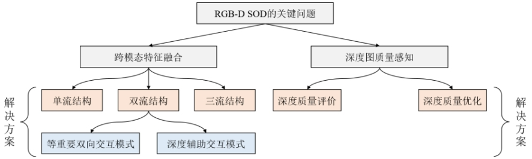
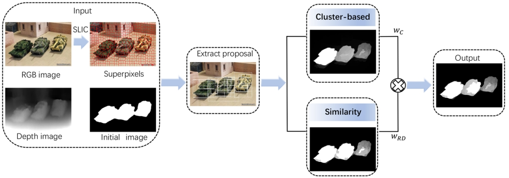
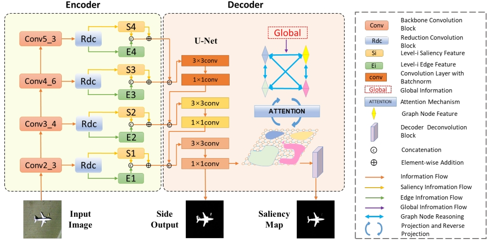
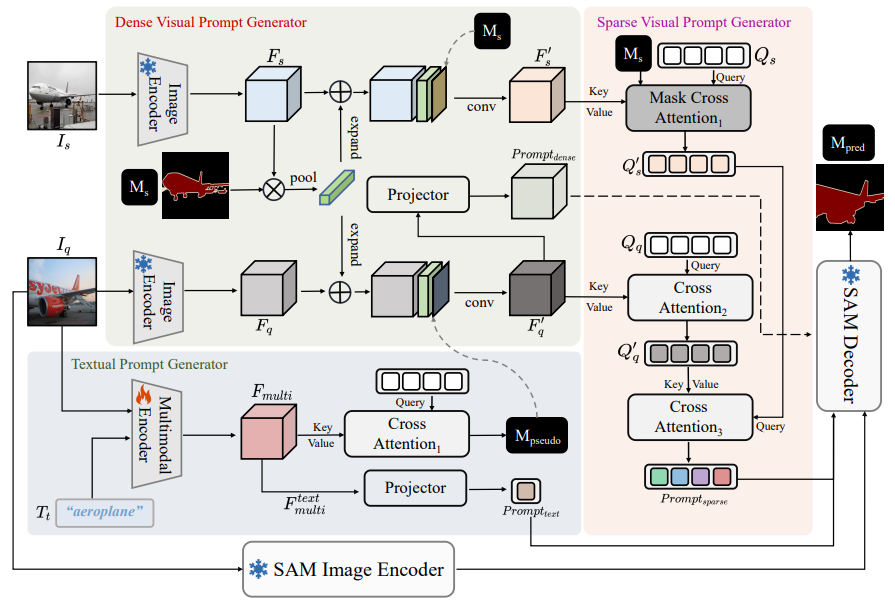

Prior Metadata-Driven RAW Reconstruction: Eliminating the Need for Per-Image Metadata
Wencheng Han†, Chen Zhang†, Yang Zhou, Wentao Liu, Chen Qian, Chengzhong Xu, Jianbing Shen*
ACM International Conference on Multimedia (ACM MM, 2024)

Research Progress of Deep Learning Driven Underwater Image Enhancement and Restoration
Runmin cong, Yumo Zhang, Chen Zhang, Chongyi Li, Yao Zhao
Journal of Singal Processing (2020, Excellent Papers for 2020-2022, with only two papers in 2020, 2/231=0.87%)
[Paper]

Research Progress of RGB-D Salient Object Detection in Deep Learning Era
Runmin Cong, Chen Zhang, Mai Xu*, Hongyu Liu, Yao Zhao
Journal of Software (2022)
[Paper]

A Benchmark Dataset and Baseline Model for Co-salient Object Detection within RGB-D Images
Ning Yang, Chen Zhang, Yumo Zhang, Haowei Yang, Ling Du*
Multimedia Tools and Applications (MTAP, 2022)
[Paper]

GGRNet: Global Graph Reasoning Network for Salient Object Detection in Optical Remote Sensing Images
Xuan Liu, Yumo Zhang, Runmin Cong*, Chen Zhang, Ning Yang, Chunjie Zhang, Yao Zhao
Chinese Conference on Pattern Recognition and Computer Vision (PRCV, 2021)
[Paper]

MM-Prompt: Multi-modality and Multi-granularity Prompts for Few-Shot Segmentation
Hang Xiong, Runmin Cong*, Jinpeng Chen, Chen Zhang, Feng Li, Huihui Bai, Sam Kwong
ACM International Conference on Multimedia (ACM MM, 2025)
[Paper]
Collaborative saliency target detection method
Cong Runmin, Zhang Chen, Yang Ning, Zhang Yumo, Yang Haowei, Zhao Yao
Chinese Patent, No.: CN112348033B
[Link]
RGB-D image saliency target detection method
Cong Runmin, Yang Ning, Zhang Chen, Zhang Yumo, Zhao Yao
Chinese Patent, No.: CN113763422B
[Link]
Optical remote sensing image saliency target detection method
Cong Runmin, Zhang Yumo, Yang Ning, Zhang Chen, Yang Haowei, Zhao Yao
Chinese Patent, No.: CN112347859A
[Link]
RGB-D image saliency target detection method based on cross-modal interaction and correction
Cong Runmin, Liu Hongyu, Zhang Chen, Lin Qinwei, Zhao Yao
Chinese Patent, No.: CN115170830A
[Link]
Depth image super-resolution reconstruction method combining monocular depth estimation
Cong Runmin, Tang Qi, Sheng Ronghui, Zhang Chen, He Lingzhi, Zhao Yao
Chinese Patent, No.: 202110803976.2
[Link]